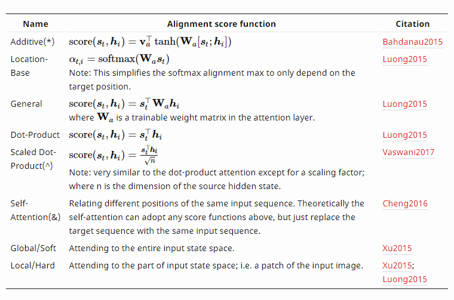

Transformer理解与Tensorflow代码阅读
谷歌2017年发了一篇论文Attention is all you need，文中提出了一种新的架构叫做Transformer，用以来实现机器翻译。它抛弃了传统用CNN或者RNN的定式，取得了很好的效果，激起了工业界和学术界的广泛讨论。本文是个人对Transformer的一些理解，和Github上Tensorflow实现的分析。
Transformer架构
Transformer模型也是使用经典的encoer-decoder架构，由encoder和decoder两部分组成。左边是encoder部分，一般由6层重复的结构构成。右边是decoder部分，一般由6层重复的结构构成。单词在Transformer里的流向为

本文将Transformer模型分为8部分介绍，分别为
- 整体流程（包括encoder和decoder）；
- Positional Encoding；
- Mask机制；
- Self-attention和Multihead-attention；
- Layer Normalization；
- 残差结构与Feed Forward；
- 输出的Linear层和Softmax。
整体流程
Encode侧是一堆Encoder器（论文中是6个Encoder组成的，Encoder的数量可以实验）。Decode侧是相同数量的Decoder器组成的。Encoder的结构完全相同（但它们不共享权重），每一个都分为两个子层：Self-attention和Feed Forward。Decoder的结构也完全相同（同样不共享权重），每一个都分为三个部分：Self-attention、Context-attention（姑且这么叫）和Feed Forward。更加清晰的流程图有


Encode侧
Encode侧的流程主要为：
- 词向量的embedding和positional encoding；
- 将embedding向量作为query、key和value输入encoder，得到新的词向量编码再输入下一个encoder，重复6次；
- 最终得到Encode侧的编码。
下面是Encode的Tensorflow代码，来自Kyubyong: transformer。代码的分析会放在代码的注释中。
1 | def encode(self, xs, training=True): |
Decode侧
Decode侧的流程主要为：
- 词向量的embedding和positional encoding；
- 将embedding向量和Encoder的输出作为Decoder输入，得到新的词向量编码，重复6遍；
- 最终将Decoder的输出接入一个全连接层，得到翻译结果。
Decode侧的代码与Encode侧有许多相似，具体为
1 | def decode(self, ys, memory, training=True): |
Positional Encoding
由于Transformer没有用到CNN和RNN，因此句子单词之间的位置信息就没有利用到。显然，这些信息对于翻译来说是非常有用的，同样一句话，每个单词的意思能够准确的翻译出来，但如果顺序不对，表达出来的意思就截然不同了。举个栗子感受一下，原句：”A man went through the Big Buddhist Temple“, 翻译成：”人过大佛寺“和”寺佛大过人“，意思就完全不同了。
那么如何表达一个序列的位置信息呢？对于某一个单词来说，他的位置信息主要有两个方面：一是绝对位置，二是相对位置。绝对位置决定了单词在一个序列中的第几个位置，相对位置决定了序列的流向。作者利用了正弦函数和余弦函数来进行位置编码：
$$PE(pos, 2i) = \sin (pos / 10000^{2i / d_{model}})$$
$$PE(pos, 2i+1) = \cos (pos / 10000^{2i / d_{model}})$$

其中，$$pos$$表示单词在句子中的位置，$$i$$表示经过embedding后维度为d_model的向量的索引。
我们来考察一下第一个公式，看是否每个位置都能得到一个唯一的值作为编码。为简单起见，不妨令$$i=0$$，那么：
$$PE(pos,0)=\sin(pos)$$
我们反过来想，假如存在位置$$j$$和$$k$$的编码值相同，那么就有：
$$\sin(i) = \sin(j)$$
$$i,j$$为非负整数且$$i$$不等于$$j$$
以上两式需要同时满足，可等价为：
$$i=(−1)k \cdot j+k \cdot \pi$$
$$i,j$$为非负整数且$$i$$不等于$$j$$且$$k$$为整数
同时成立，这就意味着：
$$\pi =[i−(−1)k \cdot j]k$$
这显然是不可能的，因为左边是个无理数（无限不循环小数），而右边是个有理数。通过反证法就证明了在这种表示下，每个位置确实有唯一的编码。
上面的讨论并未考虑$$i$$的作用。$$i$$决定了频率的大小，不同的$$i$$可以看成是不同的频率空间中的编码，是相互正交的，通过改变$$i$$的值，就能得到多维度的编码，类似于词向量的维度。这里$$2i \le 512(d_{model})$$, 一共512维。想象一下，当$$2i$$大于d_model时会出现什么情况，这时sin函数的周期会变得非常大，函数值会非常接近于0，这显然不是我们希望看到的，因为这样和词向量就不在一个量级了，位置编码的作用被削弱了。另外，值得注意的是，位置编码是不参与训练的，而词向量是参与训练的。作者通过实验发现，位置编码参与训练与否对最终的结果并无影响。
下面是Positional Encoding的代码，并没有什么特别的trick。
1 | def positional_encoding(inputs, |
Mask
mask顾名思义就是掩码，在我们这里的意思大概就是对某些值进行掩盖，使其不产生效果。Transformer模型里面涉及两种mask。分别是Padding Masking和Sequence Masking。其中，Padding Masking在所有的scaled dot-product attention里面都需要用到，而Sequence Masking只有在Decoder的self-attention里面用到。
####Padding Masking
由于Transformer中输入序列长度是不一样的，因此需要对输入序列进行补齐。具体来说，就是给在较短的序列后面填充0。因为这些填充的位置，其实是没什么意义的，所以我们的attention机制不应该把注意力放在这些位置上。同时，0经过softmax后并不是0，并且0上的梯度很大，所以我们需要进行一些处理。Padding Masking的做法是在补齐位置的值加上一个非常大的负数（可以是负无穷），经过softmax后，这些位置的概率就会接近0。
####Sequence Masking
Sequence masking是为了使得Decoder不能看见未来的信息。也就是对于一个序列，在time_step为t的时刻，我们的解码输出应该只能依赖于t时刻之前的输出，而不能依赖t之后的输出。因此我们需要想一个办法，把t之后的信息给隐藏起来。
Sequence masking的做法是用一个上三角矩阵，上三角的值全为1，下三角的值全为0，对角线也是0。将输出和该上三角矩阵相乘，就可以得到Sequence masking的结果了。举个例子：
1 | outputs: |
预测”am”的下一个词时，只有”I”和”am”参与了attention，其他的词（相对于”am”为未来的词）都不应该起作用，因此权重被清除。
1 | def mask(inputs, queries=None, keys=None, type=None): |
上面是Mask的代码，其中type='key'和type='query'对应的是Padding Masking，type='future'对应的是Sequence masking。
Self-attention和Multihead-attention
Multihead-attention实际上是由多个Self-attention构成的。
Self-attention
attention是指，对于某个时刻的输出，它在输入上各个部分的注意力。这个注意力实际上可以理解为权重。attention机制也可以分成很多种。Attention? Attention! 一文有一张比较全面的表格：

第一种的additive attention在seq2seq模型里面作为attention机制使用。additive attention对于输入序列隐状态$$h_i$$和输出序列的隐状态$$s_t$$直接合并，变成$$[s_t;h_i]$$，然后加入一层Tanh网络。
但是，Self-attention对这个过程进行了简化，直接使用$$h_i$$和$$s_t$$的点乘。而Self是指attention的输出也是attention的输入。论文Attention is all you need里面对于attention机制的描述是这样的：
An attention function can be described as a query and a set of key-value pairs to an output, where the query, keys, values, and output are all vectors. The output is computed as a weighted sum of the values, where the weight assigned to each value is computed by a compatibility of the query with the corresponding key.
也就是说通过计算Q和K之间的相似程度来选择V！下面我们详细介绍上面提到query、key和value。

query是输入句子和输出句子的描述，而key和value是对模型的描述。上图清晰地显示了两个单词的query、key和value是如何工作的。在实际实现中，上述计算以矩阵形式完成，以便更快地进行处理。

第一步是计算query，key和value矩阵。我们通过embedding将句子表示为矩阵X，并将其乘以我们训练过的权重矩阵（WQ，WK，WV）来实现。X矩阵中的每一行对应于输入句子中的一个单词。

最后，我们可以在一个公式中浓缩步骤2到6来计算Self-attention层的输出。scaled dot-product attention和dot-product attention唯一的区别就是，scaled dot-product attention有一个缩放因子$$1/\sqrt{d_k}$$。用来防止点积的结果很大，使结果处于softmax梯度很小的位置。
Multihead-attention
上图左侧是Self-attention的结构，右边是Multihead-attention的结构。Multihead-attention实际上是Self-attention的一个堆叠（论文中数量是8个），用来增加Self-attention的表达能力。

Multihead-attention的实现为
1 | def multihead_attention(queries, keys, values, |
最后，我们总结一下query、key和value的用途（Self-attention在Transformer中一共出现在三个地方）：
- 在Encoder的Self-attention中，query、key、value都来自同一个地方（相等），他们是上一层Encoder的输出。对于第一层Encoder，它们就是word embedding和Positional Encoding相加得到的输入。
- 在Decoder的self-attention中，query、key、value都来自于同一个地方（相等），它们是上一层decoder的输出。对于第一层decoder，它们就是word embedding和positional encoding相加得到的输入。但是对于decoder，我们不希望它能获得下一个time step（即将来的信息），因此我们需要进行sequence masking。
- 在context attention中，query来自于decoder的上一层的输出，key和value来自于Encoder的输出，key和value是一样的。
- key和value的维度一样，而query的维度可以与key、value不同。
Scaled dot-product attention的实现为
1 | def scaled_dot_product_attention(Q, K, V, |
Scaled dot-product attention中包含了Padding Masking和Sequence Masking。首先根据key进行Padding Masking，然后选择是否进行Sequence Masking，最后根据query进行Padding Masking。这里为什么分为两步Padding Masking，还没有搞清楚。
Layer Normalization
各种Normalization的方式已经在上一篇文章中有所介绍。复述一下，Batch Normalization不适合Transformer的原因为
- 对batch_size非常敏感。
- 不能很方便地用于RNN。对于不等长的文本来说，有些很长的输入，其他句子没有这么长，后面的词的均值就是本身。
为了避免这两个问题，Layer Normalization就应运而生了。Layer Normalization的主要变化在于，不再对batch中的N个样本在各个维度做归一化，而是针对同一层的所有神经元做归一化。
$$\mu = \sum_i{x_i}, \sigma= \sqrt{\sum_i{(x_i-\mu)^2}+\epsilon}$$
1 | def layer_norm(inputs, epsilon=1e-8, scope='layer_norm'): |
残差结构与Feed Forward

残差网络是将输出表述为输入和输入的一个非线性变换的线性叠加，解决了深层网络的训练问题。
每个Encoder中，Multihead-attention后会接一个前馈网络。这个前馈网络其实是两个全连接层，这两层的作用等价于两个 kenerl_size=1的一维卷积操作。
1 | def feed_forward(inputs, num_units, scope="positionwise_feedforward"): |
输出的Linear层和Softmax
Decoder的输出是浮点数向量。我们通过一个线性层和Softmax层将向量转化为单词。线性层是一个简单的全连接网络，它将Decoder产生的向量投影到一个更大的向量中，称为logits向量。
假设我们的模型知道从训练数据集中学到的10,000个独特的英语单词（我们的模型的“输出词汇表”）。所以，logits向量的维度为10,000，每个神经元对应于一个唯一单词的得分。然后，softmax层将这些分数转换为概率（全部为正，全部加起来为1.0），并选择具有最高概率的单元，并且将与其相关联的单词作为该time-step的输出。
需要注意的是，因为embedding矩阵的维度为$$vocab_size \times d_model$$，通常为$$10000 \times 512$$。这个矩阵参数非常多，训练困难。因此，输出的weights矩阵共享输入的单词的embedding矩阵。
1 | # Final linear projection (embedding weights are shared) |
损失函数
在训练过程中，一个未经训练的模型将会通过完全相同的正向传递。但由于我们对标记的训练数据进行训练，我们可以将其的输出与实际正确的输出进行比较。
假设我们输出的词汇仅包括6个单词（a, am, I, thanks, student以及eos
）。
一旦定义了输出词汇，我们就可以使用相同宽度的向量来表示词汇表中的每个单词，这被称为one-hot编码。举个例子，我们可以用下图中的向量来表示单词“am”：
现在，让我们来讨论这个模型的损失函数——在训练阶段我们优化的指标可用以引导一个训练有素的精确模型。假设我们的第一步是用一个简单的例子进行训练——将“merci”翻译为“thanks”。这意味着，我们希望输出的是表示单词”thanks“的概率分布。但由于这个模型没有经过充分的训练，因此这目前还不可能发生。
由于模型的参数是随机初始化的，未经训练的模型对每个单词的任意值产生概率分布。我们可以将其与实际输出进行比较，然后使用反向传播调整所有模型的权重，使输出更接近所需的输出。我们可以通过计算交叉熵和KL散度来衡量两个分布的相似性。
请注意，这只是一个十分简单地例子。实际上，我们会使用一个句子而非一个单词。比如，输入“je suis étudiant”，期望输出“I am a student”。这意味着，我们想要我们的模型连续地输出概率分布，其中：
- 每个概率分布由一个维度等于词汇表大小的向量来表示；
- 在本例中，第一个概率分布中概率最大的是与”I”相关的维度；
- 在本例中，第二格概率分布中概率最大的是与”am“相关的维度；
- 一直重复输出，直到输出的概率分布显示
的符号。
在一个足够大的数据集中对模型进行了足量时间的训练之后，我们生成的概率分布如下图所示：
通过训练，该模型将输出我们所期望的正确翻译。请注意，即便不可能在时间步中输出，每个位置依然能获得一点概率，这是softmax一个十分有用的属性，可以改善训练过程。
现在，因为模型每次只能产生一个输出，我们可以假设模型从概率分布中选择了最大概率的单词，并舍弃掉其他单词。这是一种方法（称为贪婪解码）。另外一种方法是选择概率第一第二大的单词（比如，“I”和“a”），然后下一步运行模型两次：第一次假设第一个输出位置的单词为“I”，第二次假设第一个输出位置的单词是“me”，哪个版本的错误更少就保留那一版本的位置1和2。继续重复操作来确定后续的位置。这一方法被称为“beam search”，在我们的例子中beam_size是2（因为我们在计算了位置1和位置2的beams之后比较了结果），top_beam也是2（因为我们保留了2个单词）。你可以对这两个超参数进行实验。